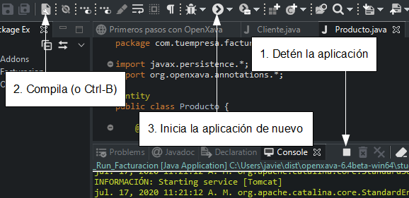

Curso:
1. Primeros pasos |
2. Modelar con Java |
3. Pruebas automáticas |
4. Herencia |
5.
Lógica de negocio básica |
6.
Validación avanzada |
7.
Refinar el comportamiento predefinido |
8.
Comportamiento y lógica de negocio |
9.
Referencias y colecciones |
A.
Arquitectura y filosofía |
B.
Java Persistence API |
C.
Anotaciones
Lección 1: Primeros
pasos
Esta lección es la génesis de tu primera aplicación. Después de una breve
revisión de la aplicación que queremos desarrollar, configuraremos todas
las herramientas que necesitas para desarrollar con OpenXava.
Vas a instalar Eclipse y crear el proyecto para tu aplicación.
Nuestro
objetivo: Una pequeña aplicación de facturación
La aplicación es una pequeña aplicación de facturación con facturas,
clientes, productos y así por el estilo. Esta aplicación es una mera
excusa para aprender algunos casos típicos en aplicaciones de gestión.
Puedes aplicar todo lo que aprendas con esta aplicación a cualquier otra
aplicación de gestión en cualquier otro dominio.
Ten en cuenta que esta aplicación de facturación es una herramienta
didáctica. No la uses “tal cual” para un sistema de facturación real.
Crear el proyecto
en Eclipse
Eclipse es el IDE ubicuo dentro del mundo Java. OpenXava viene “de casa”
listo para usar con Eclipse. Vas a desarrollar tu aplicación de
facturación usando Eclipse. Al final de este capítulo tendrás una primera
versión funcional de tu aplicación desarrollada como un proyecto de
Eclipse.
Si todavía no tienes Eclipse
descarga Eclipse para Windows,
para Mac o
para Linux. Si no tienes Java
descárgalo de java.com.
Instalar
OpenXava
Ve a
www.openxava.org
y descarga la última distribución de OpenXava. Es un archivo zip, algo así
como
openxava-6.x.zip. Simplemente descomprímelo y tendrás un
entorno listo para empezar a desarrollar. Algo como esto:

Como ves, las distribución de OpenXava incluye un workspace de Eclipse
configurado y listo para usar. Empecemos a trabajar.
Crear
el proyecto
Arranca tu Eclipse y abre el workspace de
OpenXava con él (File >
Switch Workspace):

En primer lugar has de crear un proyecto Java nuevo:

Entonces aparecerá un asistente. Teclea el nombre del proyecto,
Facturacion
y presiona en Finish:

Ten cuidado de poner la
F de
Facturacion en mayúscula
y no usar acento, para que los vínculos de abajo funcionen correctamente.
Si estás usando Java 9 o superior
con una versión reciente de Eclipse, te preguntará:

Pulsa Don't Create.
Después de esto tendrás un
proyecto Java vacío llamado
Facturacion:

Ahora tienes que convertirlo en un proyecto OpenXava:

Después de esto has de introducir el nombre de proyecto, teclea
Facturacion
y presiona OK:

Espera unos pocos segundos hasta que termine y tendrás un proyecto
OpenXava completo:

Tu proyecto ya está listo para empezar a escribir código.
Crear tu primera
entidad
Desarrollar es muy fácil: solo has de añadir entidades para ir haciendo
crecer tu aplicación. Empezaremos con una versión simplificada de
Cliente
con solo
numero y
descripcion.
Selecciona el paquete
com.tuempresa.facturacion.modelo
y pulsa el botón
New Java Class:

Después teclea
Cliente como nombre de clase y pulsa
Finish.

Fíjate que la
C de
Cliente está en mayúscula, esto es
muy importante, en Java todas las clases empiezan con mayúscula. Has
aprendido como crear una clase Java en Eclipse. A partir de ahora no
usaremos una figura para eso.
El código inicial que Eclipse proporciona para
Cliente es muy
simple:
package com.tuempresa.facturacion.modelo;
public class Cliente {
}
Ahora, te toca a ti rellenar esta
clase para convertirla en una entidad adecuada para OpenXava. Solo
necesitas añadir la anotación @Entity y las propiedades numero
y descripcion:
package com.tuempresa.facturacion.modelo;
import javax.persistence.*;
import org.openxava.annotations.*;
@Entity // Esto marca la clase Customer como una entidad
public class Cliente {
@Id // La propiedad numero es la clave. Las claves son obligatorias (required) por defecto
@Column(length=6) // La longitud de columna se usa a nivel UI y a nivel DB
private int numero;
@Column(length=50) // La longitud de columna se usa a nivel UI y a nivel DB
@Required // Se mostrará un error de validación si la propiedad nombre se deja en blanco
private String nombre;
public int getNumero() {
return numero;
}
public void setNumero(int numero) {
this.numero = numero;
}
public String getNombre() {
return nombre;
}
public void setNombre(String nombre) {
this.nombre = nombre;
}
}
Con esto tienes el código
suficiente (justo una clase) para ejecutar tu aplicación. Hagámoslo.
Ejecutar la aplicación
Lo primero es contruir el proyecto pulsando el botón
Build All o
presionando Ctrl-B:

Pulsa el botón derecho del ratón en
_Run_Facturacion.java (en
src/_run)
y selecciona
Run As > Java Application:

Ya tienes tu aplicación ejecutándose. Para verla, abre tu navegador y ve a
la URL:
http//:localhost:8080/Facturacion
Estás viendo tu aplicación por primera vez. Para empezar pulsa en el botón
INICIAR SESIÓN:

Ahora, introduce admin/admin y
pulsa en ENTRAR:

Después, pulsa en la parte de la
izquierda se mostrará una lista de módulos, escoge
Clientes:

Usa el módulo
Clientes para crear nuevos clientes, simplemente
introduce el número y el nombre y pulsa
Grabar.

Pulsa en
Lista para ver los clientes que has creado.
Enhorabuena, tienes tu entorno configurado y tu aplicación funcionando.
Modificar la
aplicación
A partir de ahora, desarrollar con OpenXava es muy fácil. Simplemente,
escribes una clase y ya puedes ver el resultado en el navegador.
Probémoslo.
Crea una nueva entidad para
Producto con el siguiente código:
package com.tuempresa.facturacion.modelo;
import javax.persistence.*;
import org.openxava.annotations.*;
@Entity
public class Producto {
@Id @Column(length=9)
private int numero;
@Column(length=50) @Required
private String descripcion;
public int getNumero() {
return numero;
}
public void setNumero(int numero) {
this.numero = numero;
}
public String getDescripcion() {
return descripcion;
}
public void setDescripcion(String descripcion) {
this.descripcion = descripcion;
}
}
Ahora, detén la aplicación,
compila (Ctrl-B) y vuelve a iniciar la aplicación:

Para ver tu nueva entidad en
acción abre tu navegador y ve a la URL:
http://localhost:8080/Facturacion/modules/Producto
Después de identificarte con admin/admin obtendrás:

Sí, ya tienes un nuevo módulo en marcha, y solo has tenido que escribir
una simple clase. Ahora puedes concentrarte en hacer crecer tu aplicación.
Resumen
Después de esta lección tienes instalado Eclipse y OpenXava. Además, lo
tienes configurado todo para poder trabajar. Ahora, tienes tu entorno
listo para desarrollar tu aplicación.
También, tienes una primera versión de tu aplicación
Facturacion
funcionando.
Pero lo más importante es que has aprendido cómo crear un nuevo proyecto,
un nuevo paquete, una nueva clase, cómo ejecutar un módulo OpenXava y
algunas otra cosas útiles que usarás en el resto del curso.
Ya estás listo para pasar a la siguiente lección, sin embargo deberías
considerar adquirir un poco de conocimiento base, tal como:
Descargar código fuente de esta lección
¿Problemas con la lección? Pregunta en el foro ¿Ha ido bien?
Ve a la lección 2